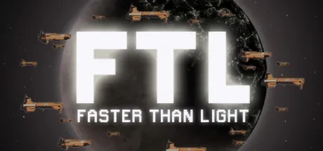

FTL: Faster Than Light é um jogo de estratégia roguelike em tempo real com pausa desenvolvido pela Subset Games. O jogador controla uma nave espacial e sua tripulação, viajando por diferentes setores da galáxia enquanto tenta chegar ao destino final antes de ser alcançado por uma frota inimiga. O gameplay envolve gerenciamento de recursos, combate tático em tempo real e decisões estratégicas sobre upgrades da nave. Cada encontro no espaço pode trazer batalhas, eventos aleatórios ou escolhas que afetam o progresso da jornada. O jogo se destaca pela dificuldade elevada e pela aleatoriedade, já que cada partida é diferente. A morte é permanente, então cada decisão é importante. O jogador precisa equilibrar energia, armas, sistemas de defesa e tripulação para sobreviver. O estilo visual é simples, mas funcional, focado na clareza das informações. No geral, FTL é um jogo estratégico desafiador com grande fator de replay.
10+ - recomendado para maiores de 10 anos
FTL: Faster Than Light não possui uma história linear tradicional, pois cada partida é gerada de forma procedural. O jogador assume o comando de uma nave da Federação que está carregando informações importantes sobre uma guerra interestelar contra uma rebelião. As forças rebeldes estão perseguindo o jogador através da galáxia, forçando uma corrida contra o tempo para chegar ao setor final e entregar os dados que podem mudar o rumo da guerra. Durante a jornada, o jogador encontra diferentes espécies alienígenas, eventos aleatórios e situações de risco que podem ajudar ou prejudicar sua missão. Cada decisão afeta o progresso da viagem e a sobrevivência da tripulação. A narrativa é emergente, ou seja, criada pelas situações que acontecem durante o jogo, em vez de uma história fixa. Isso faz com que cada partida conte uma história diferente de sobrevivência no espaço. O objetivo final é alcançar o setor inimigo e entregar os dados antes que a nave seja destruída.
14 de setembro de 2012
Entre R$10 e R$40 (dependendo da plataforma e promoções)
Aproximadamente 500 MB